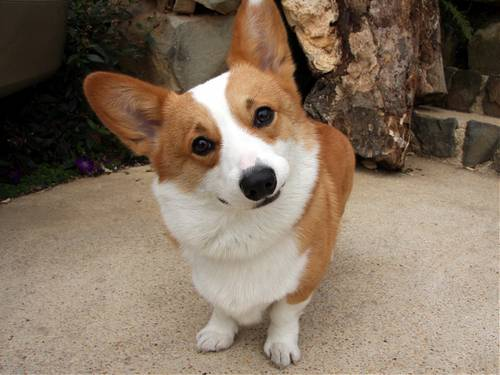

威爾斯柯基犬
威爾斯柯基犬是一種原產於英國威爾斯的品種，被認為是源自維京人帶來威爾斯的Swedish Vallhund；「柯基」在威爾斯語中是矮犬的意思。
威爾斯柯基犬平均肩高大約25至30公分、重約15公斤，原本培養來放牧牛羊，低矮的身材讓他們免於被牛隻踢到。
柯基犬是主動的犬隻並且相當的聰明，是絕佳的夥伴動物，並且在牧羊競賽跟犬隻敏捷競賽中是出色的參賽者

心得
感謝老師這學期的教導 做學生的我們感恩在心
連到首頁
連到第2頁
連到第3頁